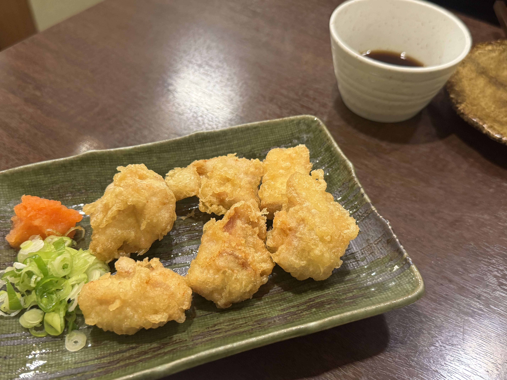
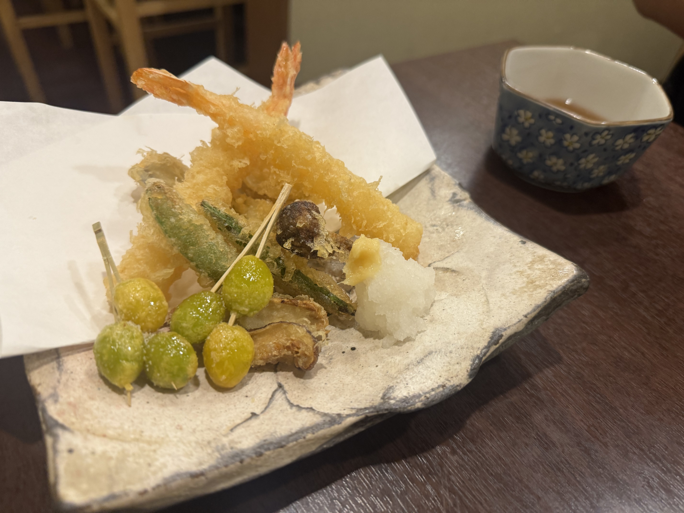
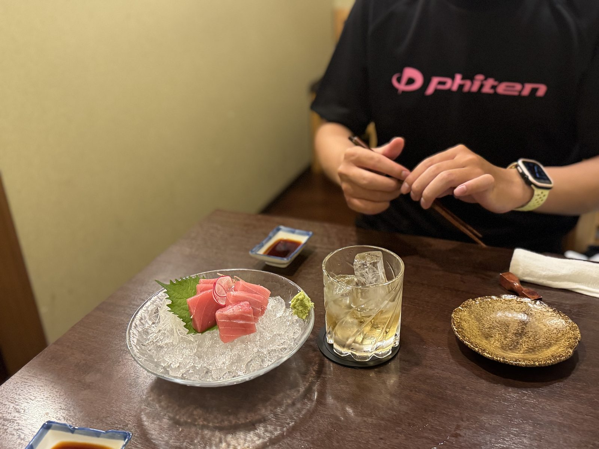
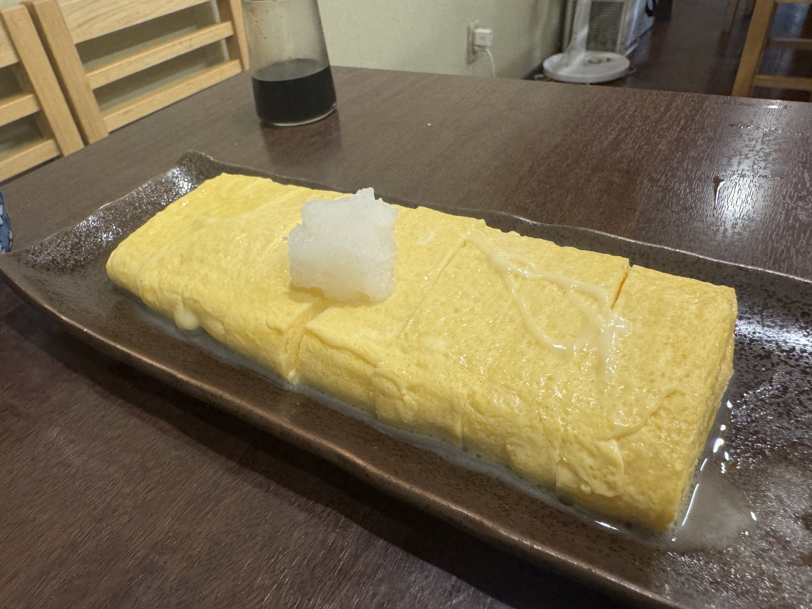
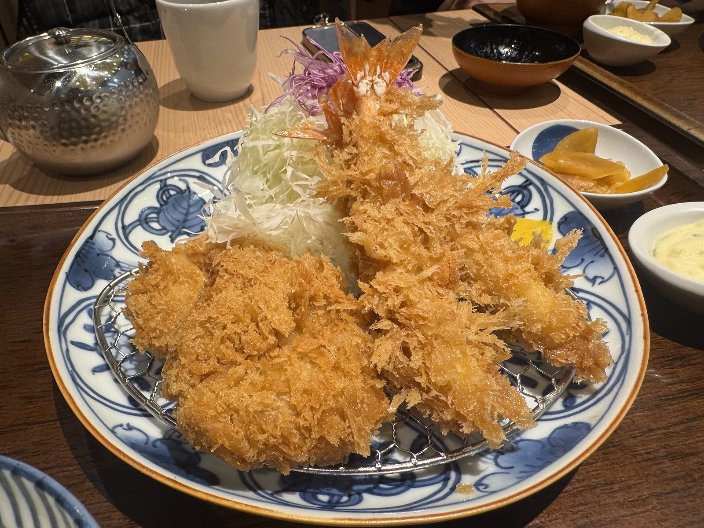

まだ、日本です
卒業旅行でヨーロッパに行ってきました。
10/16〜22の7日間で、オランダ・ベルギー・ドイツです。
シリーズにして書いていきます。
ただ第0回の今回、ヨーロッパは出てきません。堺と関空の話です。
静岡から関空の便なので、前日に大阪へ入りました。
前乗りの夜は、ごはんに使いました。
堺の「和処つくし」
向かったのは、阪堺線・大小路駅から徒歩2分の「和処つくし」さん。
「隠れ家居酒屋」の看板どおり、本当にひっそりしています。
中は明るくて清潔で、カウンターの奥では店主さんが静かに手を動かしています。
アラカルトは50種類以上。メニューを眺めているだけで10分くらい経って、そのあいだ誰も喋らない。いい夜です。
明日から一週間、和食とはお別れです。
この夜は、日本の味を食べておくことにしました。
とり天

最初に来たのがこれ。
衣は軽くてふわっとしていて、鶏はしっとり。
紅葉おろしと青ねぎを乗せて、ポン酢でいただきます。
さっぱりしているのに、ちゃんと満足する。
「とり天、好きかも」と思ったところで、次の皿が来ました。
天ぷら盛り合わせ

海老、ししとう、椎茸、そして串に刺さった銀杏。
銀杏を串に通して揚げる、という手間をさらっとやってくれます。
大根おろしと一緒だと、とり天とは別の軽さです。
秋の盛り合わせ、という一皿でした。
マグロのお造りと梅酒

ここでお造り。
氷の上のマグロは色がきれいで、口に入れるとすっと溶けます。
店主さんが、毎朝仕入れているそうです。
添えは梅酒のロック。
刺身と梅酒、やってみると案外しっくりきます。
出発の前夜には、これが一番やさしい一杯でした。
だし巻き玉子

〆はだし巻き。見てください、この長さ。
お皿いっぱいに横たわっています。
箸を入れると、出汁がじゅわっとあふれてきます。
大根おろしを乗せて、お醤油を一滴。
派手さはないのに、この夜いちばん残ったのはこれでした。
「しばらく、だし巻きとはお別れだね」と言いながら食べました。
===店舗情報===
店名: 和処つくし
リンク: ホットペッパー ・ 食べログ
住所: 大阪府堺市（阪堺線・大小路駅 徒歩2分）
関空の和幸
翌朝、関西国際空港。
出国前のごはんは、寿司か、ラーメンか、カレーか。
悩んだ末の答えは、とんかつでした。

関空の和幸で、ロースかつと海老フライの定食。
衣は細かくて軽く、ロースはやわらかくて脂が甘いです。
海老フライは尻尾がピンと立っています。
先に写真を撮れ、という顔をしています。
千切りキャベツはおかわり自由。
一週間分の野菜は、ここで入れておきます。
昨夜のとり天と天ぷらに続いて、出国前も和食で締めました。
この味を持って、飛行機に乗ります。
===店舗情報===
店名: とんかつ和幸 関西国際空港店
住所: 関西国際空港（ロースかつ・海老フライ定食 / キャベツおかわり自由）
次回からヨーロッパ
第0回は、堺の居酒屋と関空のとんかつでした。
旅の記録なのに、まだ日本にいます。
次回から、オランダです。
#1 オランダ編に続く。